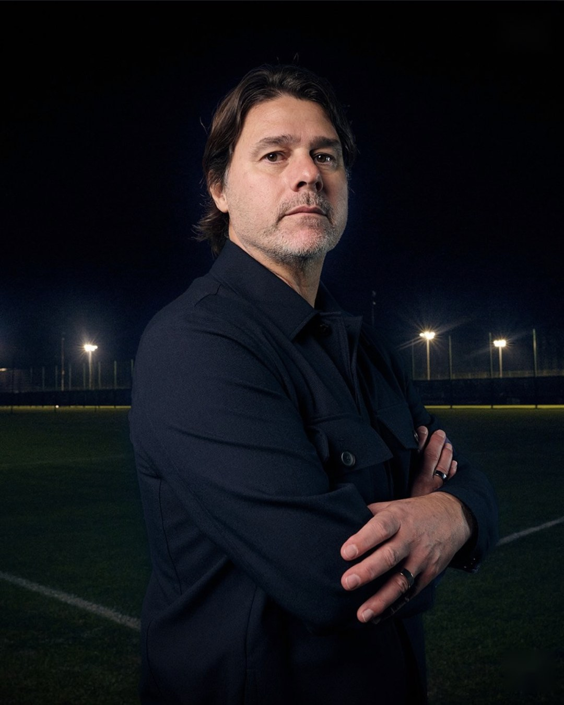
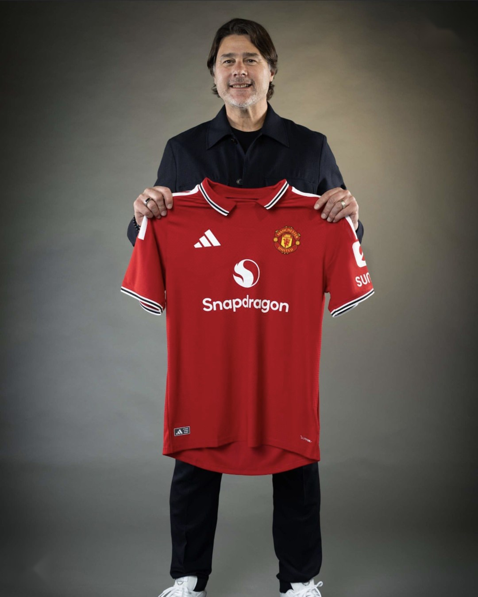

Pochettino takes the Manchester United job
He starts with the club 18th in the Premier League, on its worst start in 40 years, and his first game is Liverpool at Anfield.

Manchester United have a new head coach. Mauricio Pochettino was appointed on Friday, 13 November 2026, a day after the club sacked Michael Carrick. He signed a two-and-a-half-year contract that runs to the summer of 2029 and officially started work on Wednesday, 18 November.
He had been out of the Premier League since leaving Chelsea in May 2024. He was due to take his first training session at Carrington on Thursday, 19 November, which leaves him three days to get ready for Liverpool at Anfield.
The jobWhat he's walking into
The numbers are hard to read if you're a United fan. After 10 league games, United are 18th with eight points: one win, five draws and four defeats. The only win came back in August, 5-2 at home to newly promoted Ipswich Town. It's the club's worst start to a season in 40 years.
The last game before the international break summed it up. United needed two goals in stoppage time to draw 4-4 with Aston Villa at Old Trafford, and Carrick was gone four days later.
It's a sharp fall for Carrick. He took over in January, won 11 of his first 16 games, beat Arsenal, Manchester City, Liverpool and Chelsea along the way, and finished third to get United back into the Champions League. He was made permanent in May. Six months later he was out.

The coachSouthampton, Tottenham, PSG, Chelsea
Pochettino, who is 54 and from Argentina, made his name in England. He arrived at Southampton in 2013, moved to Tottenham a year later and built the best Spurs side in a generation, taking them to the 2019 Champions League final, which they lost to Liverpool. He was sacked a few months after that, in November 2019, without a trophy.
He won his first trophies as a manager at Paris Saint-Germain, the 2021 French Cup and the 2021-22 Ligue 1 title, and still lost the job in July 2022. He then spent a single season at Chelsea in 2023-24 before taking the United States job in September 2024. That came with a home World Cup, and it ended in the round of 16, a 4-1 loss to Belgium in Seattle on 6 July.
US Soccer still wanted him. He signed an extension that would have kept him in charge through the 2030 World Cup, and three months later he was leaving for Manchester. He said walking away was one of the hardest decisions of his career. His last games were a Concacaf Nations League quarter-final against Haiti, and he went out on a high: the US won the first leg 6-0 in Miami.
First upThree days, then Anfield
There's no gentle start. His first game is Liverpool at Anfield on Sunday, 22 November, at 4:30pm UK time, which is 7:30pm in Kenya. After that come a Champions League trip to Sporting in Lisbon and his first home game, against Brentford at Old Trafford on Saturday, 28 November.
He hasn't arrived alone. His long-time assistant Jesús Pérez and his son Sebastiano, a sports scientist, are among the staff joining him, and United say they will confirm the full backroom team in due course.
Nobody expects him to fix everything by Sunday. But United have won once in the league since August, and the quickest way to change the mood around the club is a result where they're least expected to get one.
Sources
- ITV News: Pochettino appointed Manchester United head coach after Carrick sacking (13 Nov 2026)
- Sky Sports: Pochettino appointed as Manchester United head coach
- beIN Sports: Man Utd confirm Pochettino as new head coach (13 Nov 2026)
- Heavy: Pochettino deal confirmed through 2029
- The National: Mauricio Pochettino era begins at Manchester United (13 Nov 2026)
- Sports Mole: Pochettino's official start date
- Al Jazeera: Manchester United sack Michael Carrick (12 Nov 2026)
- Times Live / Reuters: United sack Carrick (12 Nov 2026)
- The Leader / AAP: United's worst start for 40 years
- All Football / PA: How Carrick's reign unravelled
- Soccer News: Carrick sacked, Ipswich 5-2 the only win
- Brit Brief: Man Utd sack Carrick after 4-4 with Villa
- The Financial Express / AFP: Carrick's record and last season
- NST / AFP: Man Utd name Pochettino, Spurs and the 2019 final
- CBS Sports: Pochettino sacked at PSG (Jul 2022)
- The New Daily / Reuters: PSG part ways with Pochettino
- IBTimes: Who is Mauricio Pochettino?
- SI: Pochettino's record against Liverpool
- Newsweek: USMNT fall 4-1 to Belgium in the round of 16
- Fox News / OutKick: USA v Belgium, Seattle, 6 July 2026
- Backheeled: Pochettino signed on with the US in Sept 2024
- NBC Sports: USMNT-Haiti leg 2 and Pochettino's 'most difficult decision'
- Soccer News: Leaving USA one of the most difficult decisions of my career
- MLS: USMNT beat Haiti 6-0 in Miami
- ABC News / AP: US rout Haiti 6-0
- Liverpool FC: Liverpool v Manchester United, 4.30pm GMT, 22 November
- ReadManUtd: Liverpool v Man Utd TV details; Brentford on 28 November
- Brit Brief: Pochettino's expected backroom staff
- YSScores: Pérez, Jiménez and Sebastiano Pochettino arrive in Manchester